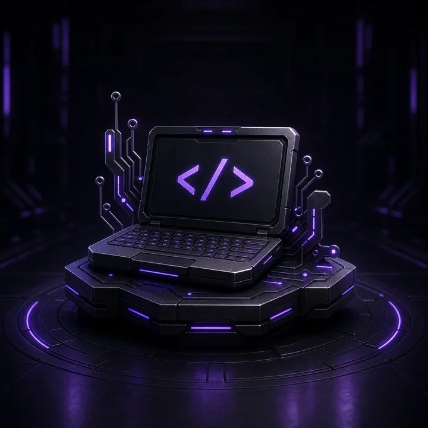

Tudo que você precisa
Em um só lugar
Explore serviços, conteúdos e soluções pensadas para transformar suas ideias em projetos de verdade.

Desenvolvimento [SERVIÇOS] Sites, sistemas, bots, servidores, aplicativos e projetos personalizados. Acessar serviçosEscolha uma categoria para continuar